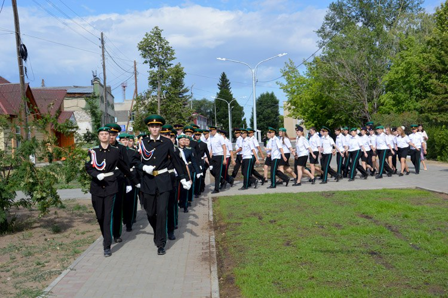
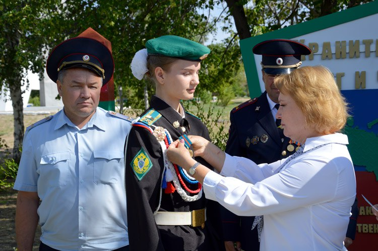
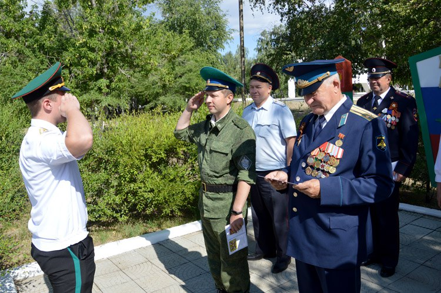
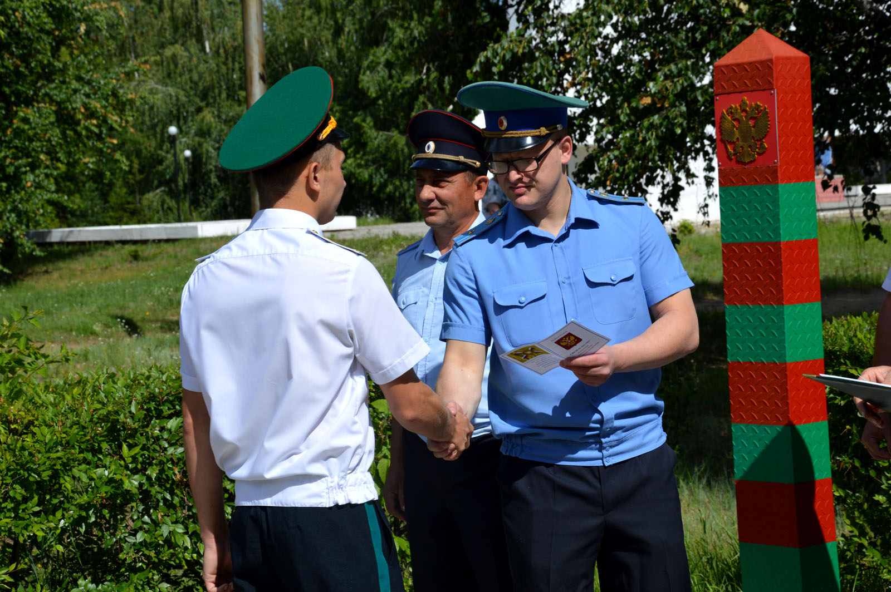
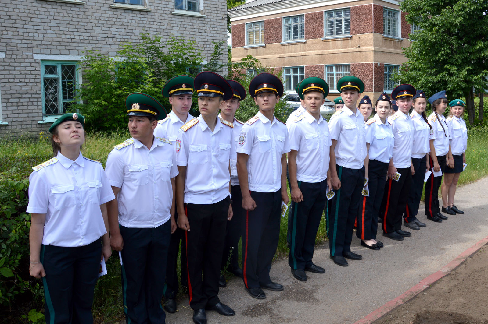
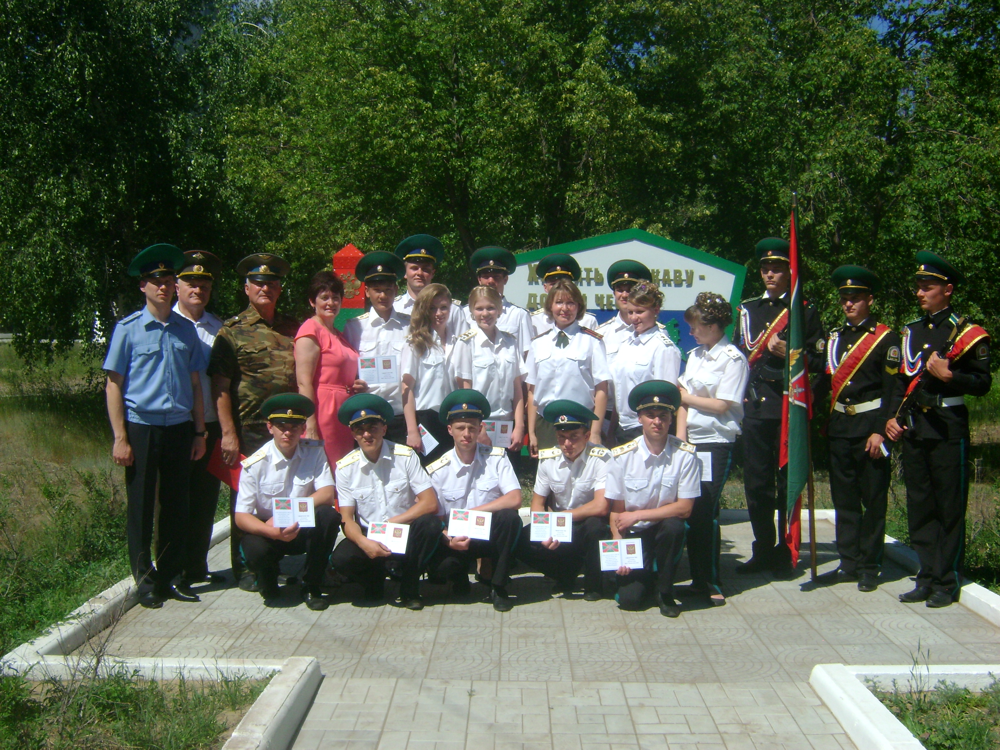
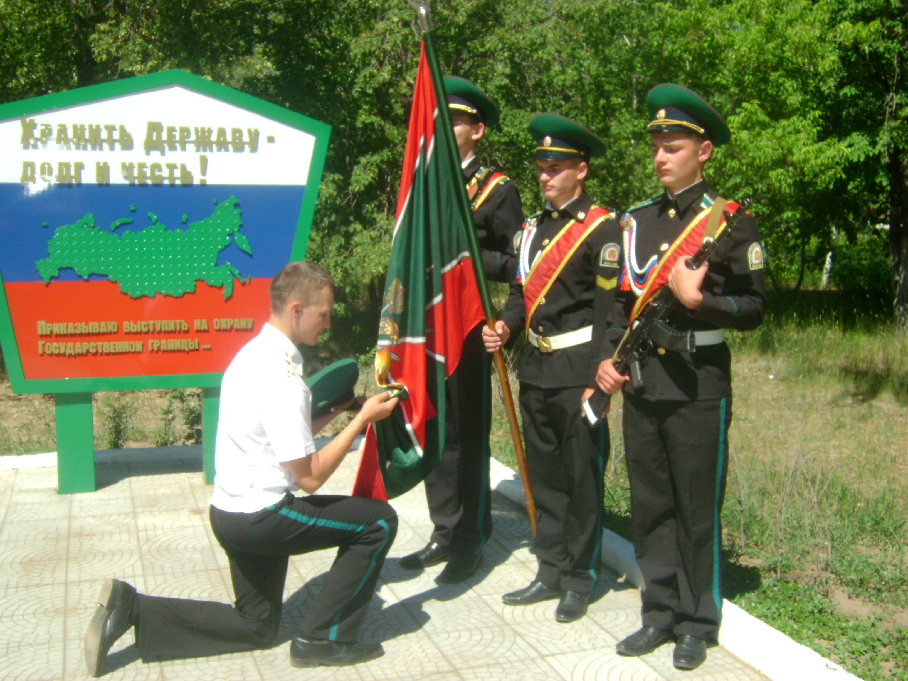

Жизнь кадет Михайловского лицея интересна и многогранна. За 4 года в стенах лицея их ждет немало масштабных событий. Но самыми важным, бесспорно, является церемония прощания со знаменем. Она проходит накануне выпускного вечера и ставит тем самым точку в их кадетской жизни. В этот день ребята торжественно прощаются со знаменем и получают свидетельства об окончании кадетских классов.






